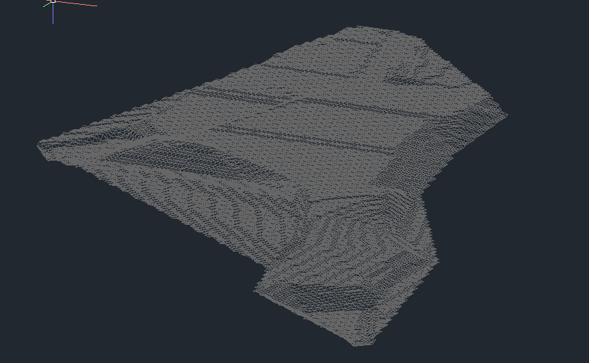
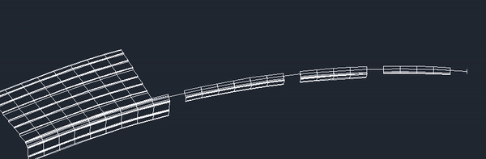

Samples of My Work

CIM/BIM/CAD/CAM Data-Knowledge Driven 3D design from multimodal data sources.

CAD/CAE/CAM Agent-AI from data sources to design to fab to assembly workflow .

CIM/CAD/CAM Agent-AI from data sources to design to construction workflow .